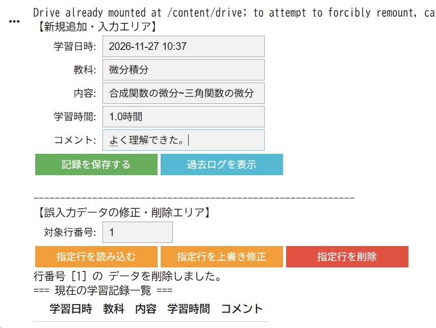
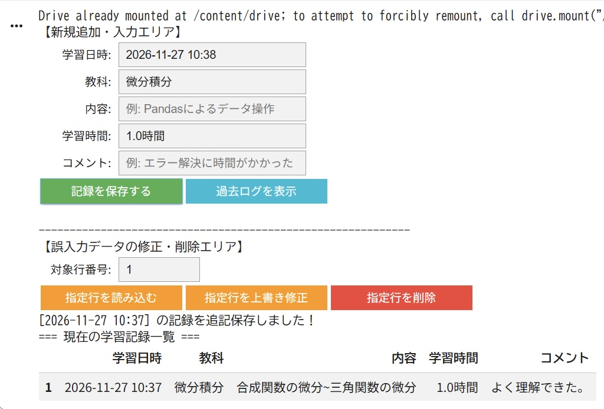
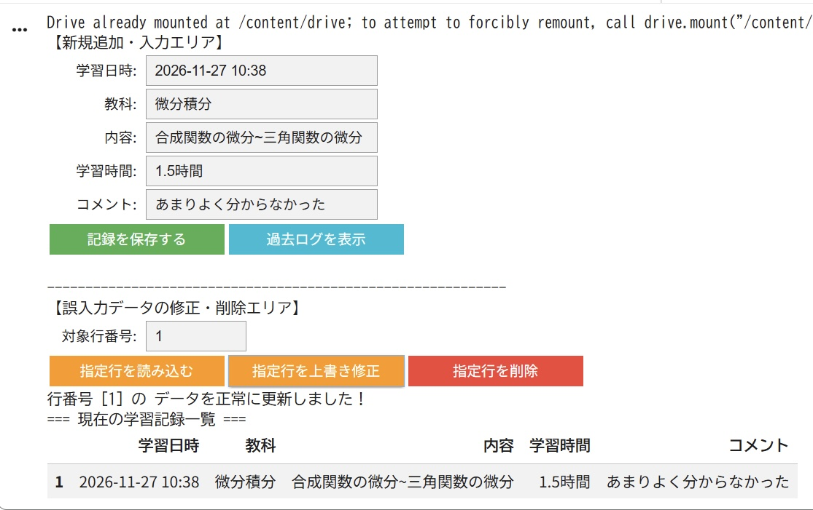
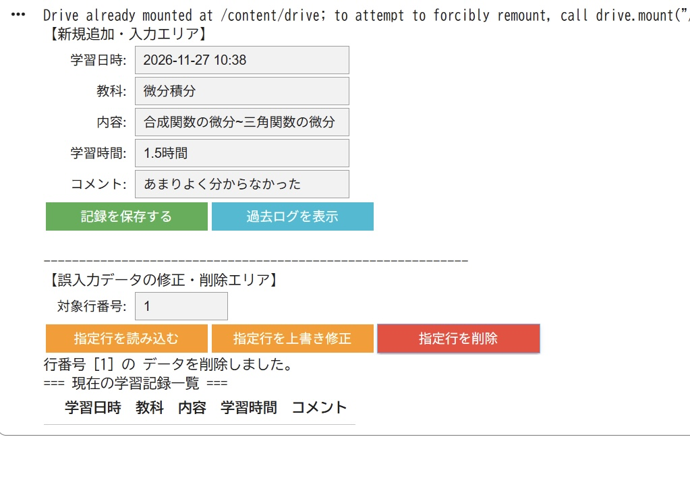
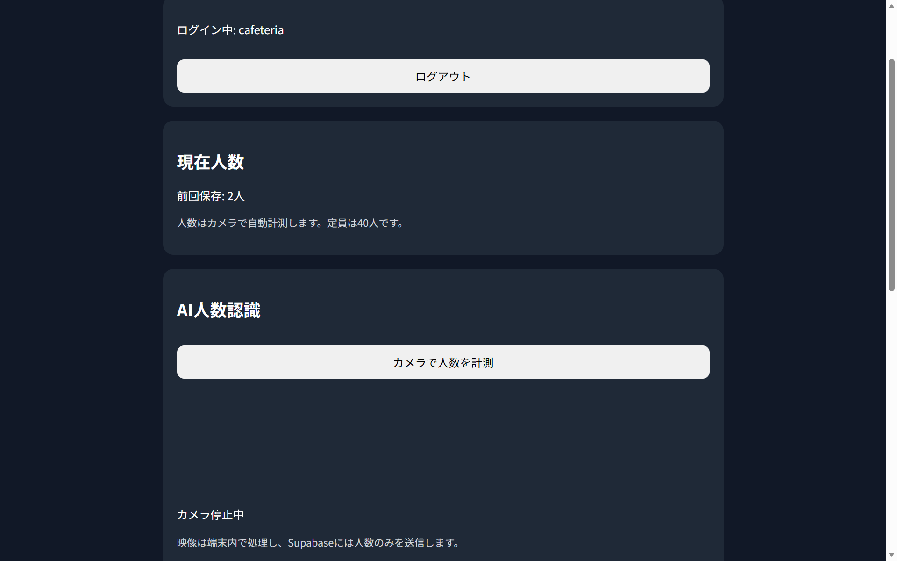
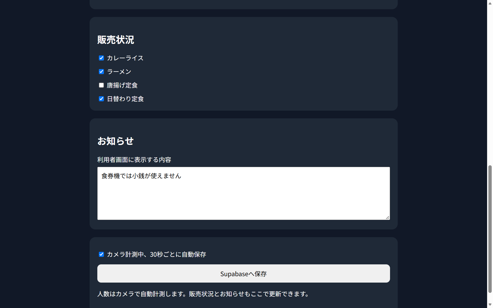
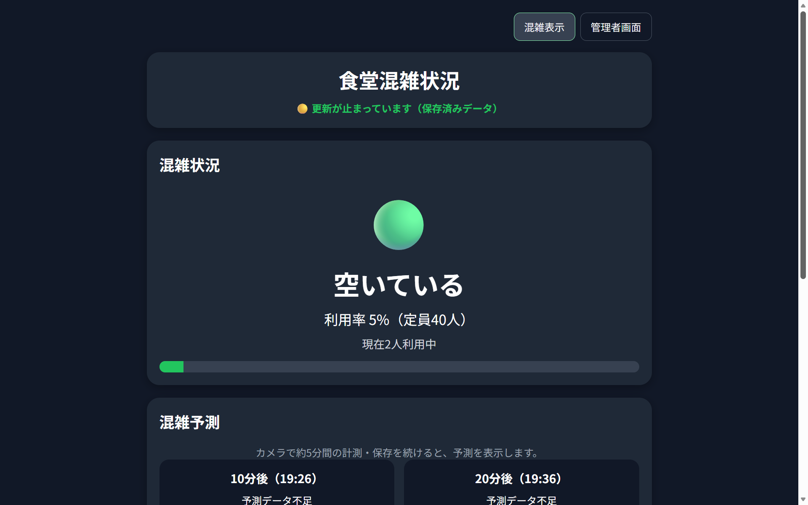
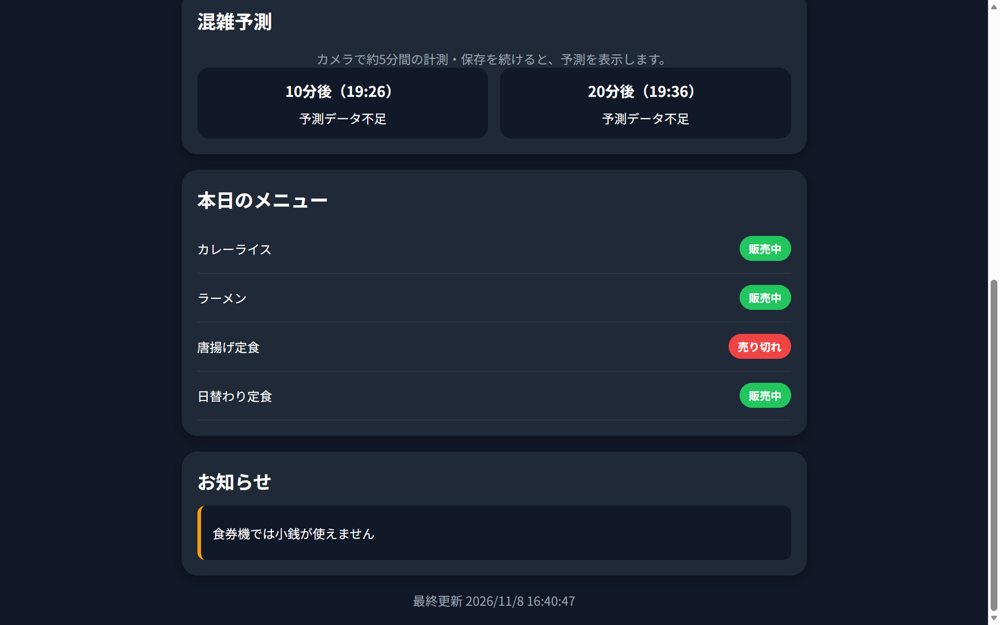

PROGRAMMING PORTFOLIO / 2026
Learning programming through classes and personal projects.
高等専門学校で情報技術やプログラミングについて学んでいます。 授業で学んだ知識を活用しながら、 Pythonや電子工作などの制作活動に取り組んでいます。
名前：栁川 翔
所属：大阪公立大学工業高等専門学校 2年Iコース39番
興味：プログラミング・コンピュータ・ものづくり
PythonとGoogle Colabを使用して、 日々の学習内容を記録・管理できるアプリを制作しました。
学習日時、教科、内容、学習時間、コメントを入力して保存できます。 また、過去の記録の表示・修正・削除にも対応しています。
Google DriveとCSVファイルを利用し、 学習データを保存できる仕組みを実装しました。
使用技術： Python / Google Colab / Google Drive / CSV
学習記録の入力画面

学習記録の保存結果

学習記録の修正

学習記録の削除

高専祭のプロジェクトとして、食堂の混雑状況を 確認できるシステムを制作しました。 カメラによる人数の自動計測や、メニューの販売状況、 お知らせの表示などの機能を備えています。
担当： データベース部分・Supabaseとの連携
使用技術： Supabase / HTML / CSS / JavaScript
管理者画面の販売状況

管理者画面の人数管理

食堂の混雑表示画面

メニューとお知らせの表示画面

授業や制作活動を通じて、各種プログラミング言語や 開発環境の基本的な操作を学んでいます。